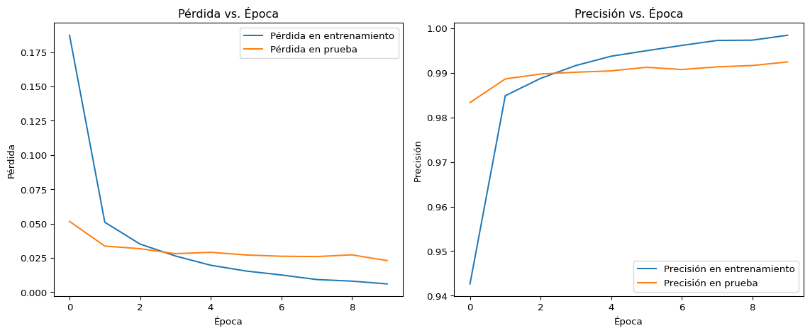
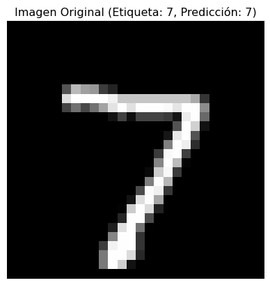

Hasta ahora hemos estudiado los perceptrones multicapa, en las cuales las neuronas de una capa están conectadas a todas las neuronas de la capa anterior. Estas redes pueden en principio “aprender” cualquier conexión entre las diferentes capas. Sin embargo, en general un modelo que incorpora más información sobre el problema de interés funciona mejor.
Un ejemplo famoso es la clasificación de imágenes. Si queremos clasificar un objeto en una imagen la posición de este objeto no es relevante para la clasificación. Así mismo, en el estudio de análisis de imágenes se usan filtros que procesan pixeles cercanos entre sí, lo que permite capturar patrones locales. Las redes convolucionales combinan estas intuiciones.
Este tipo de redes dio uno de los primeros éxitos de las redes neuronales. Se aplicaron a la clasificación de dígitos escritos por humanos (el problema de la base de datos MNIST), durante los años 90.
Invariancia y Equivariancia
En el caso de las imágenes, la posición de un objeto no es relevante para la clasificación. Esto se llama invariancia. Decimos que una función \(\boldsymbol{f}\) es invariante bajo una transformación \(\boldsymbol{t}\) si \(\boldsymbol{f}(\boldsymbol{t}(\boldsymbol{x})) = \boldsymbol{f}(\boldsymbol{x})\) para todo \(\boldsymbol{x}\).
Un ejemplo es la invarianza bajo traslaciones. Queremos que una red que identifica si una imagen contiene un gato sea invariante bajo traslaciones tal que no importe la posición del gato.
Si queremos segmentar la imagen, es decir, identificar los píxeles que corresponden a un gato, queremos que al trasladar el gato, los pixeles identificados se trasladen con él. Esto se llama equivariancia. Decimos que una función \(\boldsymbol{f}\) es equivariancia bajo una transformación \(\boldsymbol{t}\) si \(\boldsymbol{f}(\boldsymbol{t}(\boldsymbol{x})) = \boldsymbol{t}(\boldsymbol{f}(\boldsymbol{x}))\) para todo \(\boldsymbol{x}\).
Veremos cómo las redes convolucionales implementan esta idea primero en el caso más sencillo de una dimensión.
Redes convolucionales en una dimensión
Convolución en una dimensión
Una convolución transforma un vector de entrada \(\boldsymbol{x}\) en un vector de salida \(\boldsymbol{z}\) de la misma dimensión tal que \[
z_i = \sum_{j = -k}^k w_j x_{i+j}
\] {#eq:convolucion-1d} para todo \(i\). El vector \(\boldsymbol{w}\) se llama kernel (núcleo) o filtro. El rango de valores de \(j\) está dado por \([-k, k]\), y su tamaño es \(2k+1\). Se usan kernels relativamente pequeños, típicamente de tamaño 3 o 5.
Este tipo de operaciones es muy usada en el análisis de series temporales. Es decir, el elemento \(x_i\) del vector \(\boldsymbol{x}\) es la medición de una variable física en el instante \(t_i\). Este tipo de filtros y convoluciones ayudan a extraer patrones locales en ese tipo de series o señales.
Este tipo de convolución se ilustra en la figura 10.2 (a) y (b) del libro. Un ejemplo de un kernel con otro tamaño es el de la figura 10.3 (c) del libro.
Vemos que los pesos \(w_j\) son los mismos para todo \(i\). Esto hace que la convolución sea invariante bajo traslaciones.
La idea de esta operación es que producimos varios filtros de la señal \(\boldsymbol{x}\), cada uno con un kernel diferente. En análisis de señales clásico, se usan filtros específicos para extraer ciertas características. En este caso dejamos libres los pesos \(w_j\) para que la red aprenda los filtros que mejor se ajusten al problema.
Padding (Rellenado)
Al ver la @eq:convolucion-1d, notamos que los primeros elementos del vector \(\boldsymbol{z}\) pueden depender de elementos de vector \(\boldsymbol{x}\) que no están definidos. Por ejemplo, \(z_0\) depende de \(x_{-1}\) que no está definido. Existen varias estrategias para lidiar con este problema:
Rellenado válido: Se llama así porque se usan sólo los elementos de \(\boldsymbol{x}\) que están definidos. Si algún elemento de \(\boldsymbol{z}\) depende de un elemento de \(\boldsymbol{x}\) que no está definido, se descarta. Esto se ilustra en la figura 10.2 (d) del libro.
Rellenado de ceros: Se llama así porque se agregan ceros a los bordes de \(\boldsymbol{x}\) para que todos los elementos de \(\boldsymbol{z}\) dependan de elementos de \(\boldsymbol{x}\) que están definidos. Esto se ilustra en la figura 10.2 (c) del libro.
Paso (stride) y agrupamiento (pooling).
Como discutiremos más adelante, es usual que el vector \(\boldsymbol{z}\) tenga menos elementos que el vector \(\boldsymbol{x}\). Esto se puede hacer de dos maneras:
Paso (stride): Como cada elemento de \(\boldsymbol{z}\) depende de \(2k+1\) elementos de \(\boldsymbol{x}\), no perdemos mucha información si calculamos sólo algunos de los elementos de \(\boldsymbol{z}\). Es decir, definimos \(z_i = \sum_{j = -k}^k w_j x_{i\cdot p-j}\) donde \(p\) es el paso. Como vemos, \(\boldsymbol{z}\) tendrá aproximadamente \(\frac{n}{p}\) elementos. Esto se ilustra en las figuras 10.3 (a) y (b) del libro.
Agrupamiento (pooling): Otra manera de reducir la dimensión es mediante un agrupamiento o pooling. Los más comunes son:
Max pooling: Se obtiene \(z_i = \max_{j = -k}^k y_{i\cdot p-j}\), donde \(y\) es el resultado de una convolución con un kernel de tamaño \(2k+1\). Es decir, se toma el valor máximo de la convolución.
Average pooling: Se obtiene \(z_i = \frac{1}{2k+1} \sum_{j = -k}^k y_{i\cdot p-j}\), donde \(y\) es el resultado de una convolución con un kernel de tamaño \(2k+1\). Es decir, se toma el promedio de la convolución.
Capas convolucionales
Una capa convolucional consiste en realizar una convolución de la señal de entrada \(\boldsymbol{x}\) con un kernel \(\boldsymbol{w}\), sumar un sesgo \(\beta\) y aplicar una función de activación \(a\) para producir la salida \(h\). En realidad se producen varios canales\(h_i\) a partir de la misma señal de entrada \(\boldsymbol{x}\), cada uno con un kernel diferente: \[
h_{ic} = a\left(\sum_{j = -k}^k w_{cj} x_{i+j} + \beta_{c}\right)\,,
\] donde \(c\) es el canal, \(i\) se refiere a cada pixel, y \(j\) es el índice de la convolución. Esto se ilustra en la figura 10.5 del libro.
Si tenemos \(C\) canales de salida, y un tamaño de kernel \(2k+1\), entonces la capa convolucional tiene \(C(2k+2)\) parámetros. Si comparamos con una capa densa, que tiene \(C\) neuronas y \(n\) entradas, entonces la capa densa tiene \(C(n + 1)\) parámetros. El tamaño del kernel es mucho menor que el tamaño de la señal de entrada \(2k+1 \ll n\). Por lo tanto, la capa convolucional tiene muchos menos parámetros que la capa densa. A pesar de tener menos parámetros, logra capturar la forma de las señales locales de forma mucho más eficaz. Esto es porque le hemos dado información adicional sobre el problema: La invarianza bajo traslaciones. Esta diferencia se ilustra en la figura 10.4 del libro.
En el libro se ilustra un ejemplo que llama MNIST-1D. Nosotros usaremos el ejemplo más clásico con los datos MNIST usual en 2D.
Campo receptivo (receptive field)
El campo receptivo es el área de la imagen que se utiliza para calcular el valor de una neurona. En el caso de una capa densa (completamente conectada), el campo receptivo es toda la imagen.
En el caso de una sola capa convolucional, un pixel dado \(i,j\) depende de un área de los canales de entrada de tamaño \(2k+1\). Por lo tanto, el campo receptivo es de tamaño \(2k+1\). Si hay más capas convolucionales, el campo receptivo crece porque cada pixel de un filtro de entrada a su vez depende de varios pixeles de la capa anterior.
Redes Convolucionales en Dos Dimensiones
La generalización a dos dimensiones es directa, sólo requiere aceptar más índices. El filtro para el pixel \((i,j)\) es: \[
h_{ij} = a\left(\sum_{m = -k}^k \sum_{n = -k}^k w_{mn} x_{i+m, j+n} + \beta\right)\,,
\]
Un típico filtro de este tipo se ilustra en la figura 10.9 del libro.
Si tenemos varios filtros, escribimos \[
h_{cij} = a\left(\sum_{m = -k}^k \sum_{n = -k}^k w_{cmn} x_{i+m, j+n} + \beta_c\right)\,.
\] Vemos entonces que es natural trabajar con objetos que tienen más de dos índices, es decir tensores.
Como las capas convolucionales se apilan, la entrada de la capa anterior también consistirá en varios filtros. A estos los llamamos los canales de entrada. De hecho, para imágenes digitales, la entrada de la primerísima capa convolucional será la imagen original, que tiene tres canales: rojo, verde y azul. En astronomía podría incluso tener más canales correspondientes a diferentes longitudes de onda. En general, nuestros filtros también pueden mezclar diferentes canales de entrada, entonces la capa convolucional se escribe \[
h_{cij} = a\left(\sum_{m = -k}^k \sum_{n = -k}^k \sum_{c' = 1}^{C'} w_{cc',mn} x_{c', i+m, j+n} + \beta_c\right)\,.
\] Donde \(C'\) es el número de canales de entrada.
Ejemplo con MNIST
Ahora repetimos el ejemplo de MNIST pero usando capas convolucionales.
Primero cargamos los datos. Recuerde que debemos normaliarlos.
import torchimport torch.nn as nnimport torch.optim as optimfrom torchvision import datasets, transformsimport matplotlib.pyplot as plt# Definir transformaciones para los datostransform = transforms.Compose([ transforms.ToTensor()])# Cargar datos de MNISTtrain_dataset = datasets.MNIST('./data', train=True, download=True, transform=transform)test_dataset = datasets.MNIST('./data', train=False, transform=transform)# Calcular media y desviación estándar del conjunto de entrenamientotrain_loader_temp = torch.utils.data.DataLoader(train_dataset, batch_size=len(train_dataset))data =next(iter(train_loader_temp))[0]mean = data.mean().item()std = data.std().item()# Aplicar normalización con los valores calculadostransform_norm = transforms.Compose([ transforms.ToTensor(), transforms.Normalize((mean,), (std,))])# Recargar los datasets con la normalización correctatrain_dataset = datasets.MNIST('./data', train=True, download=True, transform=transform_norm)test_dataset = datasets.MNIST('./data', train=False, transform=transform_norm)# Definir dataloaderstrain_loader = torch.utils.data.DataLoader(train_dataset, batch_size=64, shuffle=True)test_loader = torch.utils.data.DataLoader(test_dataset, batch_size=1000, shuffle=False)
Ahora vamos a entrenar un perceptrón multicapa para clasificar las imágenes.
# Definir una red neuronal MLP simpleclass CNN(nn.Module):def__init__(self):super(CNN, self).__init__()# First convolutional layerself.conv1 = nn.Sequential( nn.Conv2d(1, 32, kernel_size=3, padding=1), # 1 input channel, 32 output channels nn.ReLU(), nn.MaxPool2d(kernel_size=2, stride=2) # Reduces spatial dimensions by half )# Second convolutional layerself.conv2 = nn.Sequential( nn.Conv2d(32, 64, kernel_size=3, padding=1), # 32 input channels, 64 output channels nn.ReLU(), nn.MaxPool2d(kernel_size=2, stride=2) # Reduces spatial dimensions by half again )# Fully connected layersself.fc = nn.Sequential( nn.Flatten(), nn.Linear(64*7*7, 128), # After two maxpools, 28x28 becomes 7x7 nn.ReLU(), nn.Linear(128, 10) # Output layer for 10 classes )def forward(self, x): x =self.conv1(x) # Shape: [batch, 32, 14, 14] x =self.conv2(x) # Shape: [batch, 64, 7, 7] x =self.fc(x) # Shape: [batch, 10]return x# Inicializar modelo, función de pérdida y optimizadordevice = torch.device("cuda"if torch.cuda.is_available() else"cpu")# # Diagnóstico para disponibilidad de la GPU# print("Calculando en: ", device)# print("Dispositivo disponible: ", torch.cuda.is_available())# if torch.cuda.is_available():# print("Dispositivo actual: ", torch.cuda.current_device())# print("Nombre del dispositivo: ", torch.cuda.get_device_name(torch.cuda.current_device()))model = CNN().to(device)criterion = nn.CrossEntropyLoss()optimizer = optim.SGD(model.parameters(), lr=0.01, momentum=0.9)# Función para evaluar el modelodef evaluate(model, data_loader, criterion, device): model.eval() total_loss =0 correct =0 total =0with torch.no_grad():for data, target in data_loader: data, target = data.to(device), target.to(device) output = model(data) total_loss += criterion(output, target).item() * data.size(0) _, predicted = torch.max(output.data, 1) total += target.size(0) correct += (predicted == target).sum().item()return total_loss / total, correct / total# Entrenamientoepochs =10train_losses = []test_losses = []train_accuracies = []test_accuracies = []for epoch inrange(epochs): model.train() running_loss =0.0 correct =0 total =0for data, target in train_loader: data, target = data.to(device), target.to(device) optimizer.zero_grad() output = model(data) loss = criterion(output, target) loss.backward() optimizer.step() running_loss += loss.item() * data.size(0) _, predicted = torch.max(output.data, 1) total += target.size(0) correct += (predicted == target).sum().item() train_loss = running_loss /len(train_loader.dataset) train_accuracy = correct / total# Evaluar en conjunto de prueba test_loss, test_accuracy = evaluate(model, test_loader, criterion, device)# Guardar métricas train_losses.append(train_loss) test_losses.append(test_loss) train_accuracies.append(train_accuracy) test_accuracies.append(test_accuracy)# # Para ver el progreso del entrenamiento# # comentarlo a la hora de producir el sitio web# print(f'Epoch {epoch+1}/{epochs}: '# f'Train Loss: {train_loss:.4f}, Train Acc: {train_accuracy:.4f}, '# f'Test Loss: {test_loss:.4f}, Test Acc: {test_accuracy:.4f}')
Después de entrenar, graficamos las pérdidas y la precisión en el conjunto de entrenamiento y prueba.
# Graficar resultadosplt.figure(figsize=(12, 5))plt.subplot(1, 2, 1)plt.plot(train_losses, label='Pérdida en entrenamiento')plt.plot(test_losses, label='Pérdida en prueba')plt.xlabel('Época')plt.ylabel('Pérdida')plt.legend()plt.title('Pérdida vs. Época')plt.subplot(1, 2, 2)plt.plot(train_accuracies, label='Precisión en entrenamiento')plt.plot(test_accuracies, label='Precisión en prueba')plt.xlabel('Época')plt.ylabel('Precisión')plt.legend()plt.title('Precisión vs. Época')plt.tight_layout()plt.show()

Figura 1: Pérdida y precisión en el conjunto de entrenamiento y prueba
En la figura @ref(fig-conv-loss) vemos que a pesar de que todos los dígitos están centrados, alcanzamos una precisión mayor que el perceptrón multicapa y con muy poco esfuerzo (la primera arquitectura que intenté). Esto es porque los filtros además capturan la correlación entre pixeles.
Para entender mejor cómo la red procesa la imagen, podemos visualizar las salidas (mapas de características o feature maps) de cada capa convolucional para una imagen de entrada específica.
Código
# Ensure model is in evaluation mode and on the CPUmodel.eval()model.cpu()# Get a sample image from the test_loader# Make sure test_loader is defined from your data loading sectionsample_data =next(iter(test_loader))sample_image, sample_label = sample_data[0][0:1], sample_data[1][0:1] # Take the first image and label# Dictionary to store activationsactivations = {}def get_activation(name):def hook(model, input, output): activations[name] = output.detach()return hook# Register forward hooks on the convolutional layershook_conv1 = model.conv1.register_forward_hook(get_activation('conv1'))hook_conv2 = model.conv2.register_forward_hook(get_activation('conv2'))# Perform a forward pass to trigger hookswith torch.no_grad(): output = model(sample_image) predicted_class = torch.argmax(output, dim=1).item()# Remove hookshook_conv1.remove()hook_conv2.remove()# --- Plotting the feature maps ---# Plot the original imageplt.figure(figsize=(12, 5)) # Adjusted figure size for potentially many plotsplt.subplot(1, 1, 1) # This will be overwritten by feature map plots if not managed carefullyplt.imshow(sample_image.squeeze().cpu().numpy(), cmap='gray')plt.title(f'Imagen Original (Etiqueta: {sample_label.item()}, Predicción: {predicted_class})')plt.xticks([])plt.yticks([])plt.show()# Plot feature maps from conv1fm_conv1 = activations['conv1'].squeeze() # Squeeze out batch dimensionnum_filters_conv1 = fm_conv1.shape[0]# Determine grid size (e.g., 4 rows for 32 filters)rows_conv1 =4cols_conv1 = num_filters_conv1 // rows_conv1if num_filters_conv1 % rows_conv1 !=0: # if not perfectly divisible cols_conv1 +=1fig_fm_conv1, axes_fm_conv1 = plt.subplots(rows_conv1, cols_conv1, figsize=(cols_conv1 *1.5, rows_conv1 *1.5))axes_fm_conv1 = axes_fm_conv1.ravel()for i inrange(num_filters_conv1): axes_fm_conv1[i].imshow(fm_conv1[i].cpu().numpy(), cmap='viridis') # 'viridis' often good for activations axes_fm_conv1[i].set_xticks([]) axes_fm_conv1[i].set_yticks([]) axes_fm_conv1[i].set_title(f'Filtro {i+1}')for j inrange(num_filters_conv1, len(axes_fm_conv1)): # Hide unused subplots axes_fm_conv1[j].axis('off')fig_fm_conv1.suptitle('Mapas de Características de la Capa conv1', fontsize=16)fig_fm_conv1.tight_layout(rect=[0, 0, 1, 0.95])plt.show()# Plot feature maps from conv2fm_conv2 = activations['conv2'].squeeze()num_filters_conv2 = fm_conv2.shape[0]# Determine grid size (e.g., 8 rows for 64 filters)rows_conv2 =8cols_conv2 = num_filters_conv2 // rows_conv2if num_filters_conv2 % rows_conv2 !=0: cols_conv2 +=1fig_fm_conv2, axes_fm_conv2 = plt.subplots(rows_conv2, cols_conv2, figsize=(cols_conv2*1.5, rows_conv2*1.5))axes_fm_conv2 = axes_fm_conv2.ravel()for i inrange(num_filters_conv2): axes_fm_conv2[i].imshow(fm_conv2[i].cpu().numpy(), cmap='viridis') axes_fm_conv2[i].set_xticks([]) axes_fm_conv2[i].set_yticks([]) axes_fm_conv2[i].set_title(f'Filtro {i+1}')for j inrange(num_filters_conv2, len(axes_fm_conv2)): # Hide unused subplots axes_fm_conv2[j].axis('off')fig_fm_conv2.suptitle('Mapas de Características de la Capa conv2', fontsize=16)fig_fm_conv2.tight_layout(rect=[0, 0, 1, 0.95])plt.show()

(a) Visualización de los mapas de características para un dígito de muestra. Arriba: imagen original. Medio: 32 mapas de características de la capa conv1. Abajo: 64 mapas de características de la capa conv2.